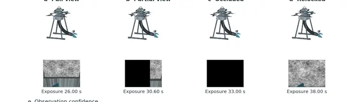
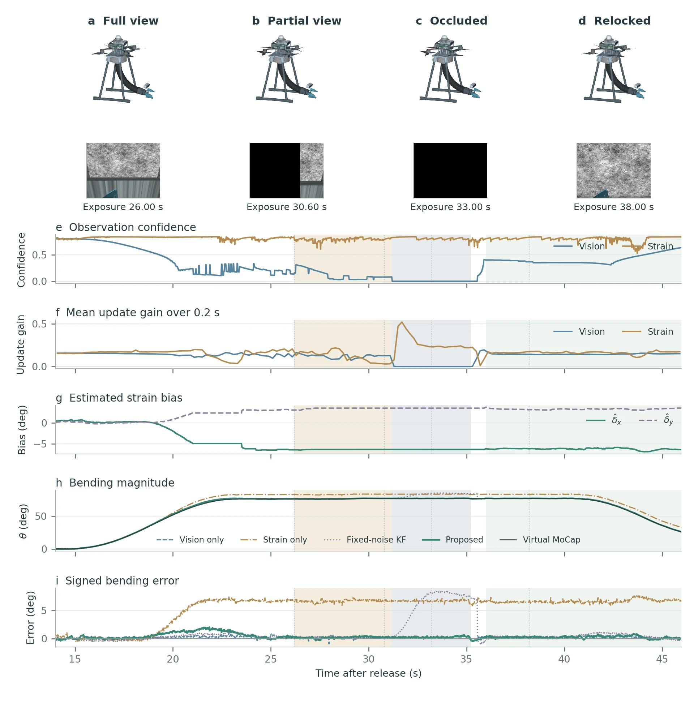
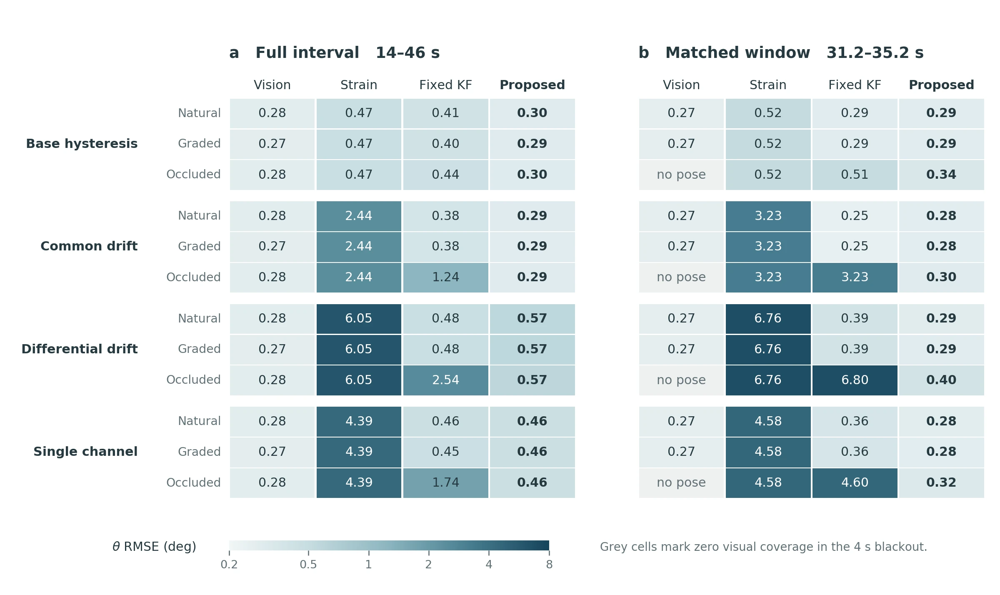

G1 · 视觉与应变增广融合 / 2026-11-20 16:28（北京时间）
面向视觉退化与应变迟滞的连续体臂形态融合
三趟 PX4 / MuJoCo 飞行中用可见阶段校准应变偏置。相对贴片反向偏移时，4 秒全遮挡内的弯曲角误差降至 0.40°，覆盖全部 600 个输出时刻。
大附件单独提供：独立台架、标定和冻结模型、直行轨迹原始数据、左偏轨迹原始数据、右偏轨迹原始数据。
模型与场景

01腕部相机的四个时刻
左偏航迹中同期的整机姿态与腕部原帧，依次为清晰、局部遮挡、完全遮挡和重锁。

曲线与机制图

01视觉、应变与弯曲误差的同步轨迹
上方按曝光时刻选帧。置信度、实际更新增益、两个偏置分量和四方法弯曲误差按估计输出时钟对齐。


02三种视觉条件的四方法比较
三趟合并的全程成绩与等时长关键窗口；虚拟动捕独立计分。

视频回放
01穿门中视野退化、全黑与恢复的同步回放
22–41 s。逐帧回看飞机和腕部图像，并联读弯曲角及误差、观测置信度和在线偏置。
论文与报告
第一页面向同一时刻解释估计机制；第二页给出四种方法的角度、方向、覆盖率、重锁时序和跨遮挡起漂成绩。
数据及运行记录
按应变工况、视觉工况和时段读取角度、方位与覆盖；同时提供四方法共同有效时刻的成绩。
67 项硬性检查与逐趟明细；记录实际数值、阈值、方向与结果。
记录输入、传感器模型及估计器的文件指纹。
固定协方差基线与增广滤波器在独立标定航迹上的调参记录。
各趟、工况的估计先于真值评分封存。
RGB-D、视觉标定及不同时段重锁统计，并保留原生二进制指纹。
独立动作上的连续应变逆模型精度、方差覆盖和截断复算。
可按包名和成员路径核对 SHA-256。
按工况、时段和算法比较有效样本数、覆盖率、弯曲角及方位角 RMSE。
训练外台架动作、标定航迹、传感参数和估计输入。
原生 ULog、ROS bag、MuJoCo 状态、RGB-D 关键时刻及输入指纹、传感器重放、四方法输出和独立评分真值。
原生 ULog、ROS bag、MuJoCo 状态、RGB-D 关键时刻及输入指纹、传感器重放、四方法输出和独立评分真值。
原生 ULog、ROS bag、MuJoCo 状态、RGB-D 关键时刻及输入指纹、传感器重放、四方法输出和独立评分真值。